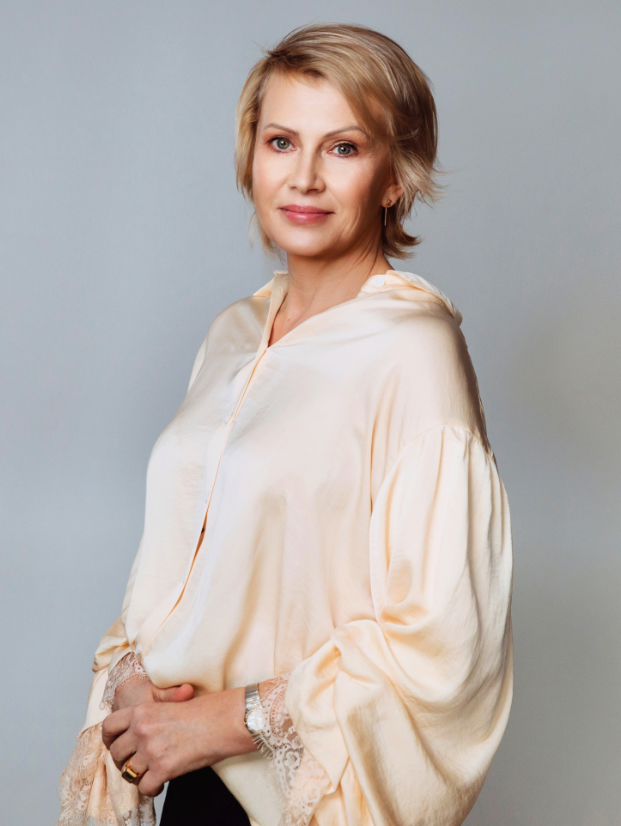
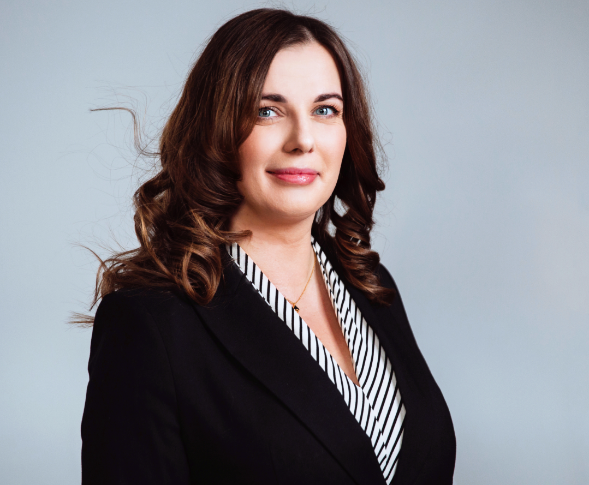

Berenda and Partners powstało z potrzeby realizacji naszych zawodowych pasji w środowisku, które sami tworzymy,
kształtujemy i o które dbamy.
Nasze poprzednie doświadczenia to długie lata pracy w firmach rekrutacyjnych, które wyposażyły nas nie tylko w wiedzę i potrzebne kontakty, ale też ukształtowały nasze myślenie o roli head huntera. Choć pewno zabrzmi to jak banał, ale naprawdę lubimy swoją pracę. Wynika to z tego, że lubimy ludzi i każdy jest dla nas ważny, nawet jeśli nie zawsze jest najlepszym kandydatem do danej roli.
Ludzie wnoszą do naszej pracy ogromną różnorodność, uczą nas i rozwijają. Nasi Klienci pozwalają nam realizować nasze pasje, za co jesteśmy wdzięczni. Staramy się odpowiadać na to zaufanie pełnym zaangażowaniem i bardzo indywidualnym podejściem. Nic nie musimy, wszystko możemy bo sami kształtujemy naszą rzeczywistość. To ogromna wartość, dzięki której do każdego wyzwania możemy podejść zupełnie od nowa i bez obciążeń. Mamy ogromną przyjemność pracować nie tylko dla firm budujących gospodarkę, ale również dla organizacji zmieniających świat. To wielki przywilej i radość.
Dobrze, że jesteście z nami.

Katarzyna Berenda-Ratajczyk, Prezes Zarządu
Prawo i podatki ( kancelarie i stanowiska typu in-house)
Rekrutacją zajmuję się od 1998r, pracując jako konsultant, menedżer działu rekrutacji i w końcu wiceprezes jednej z największych firm rekrutacyjnych w kraju. W 2016 zdecydowałam się iść własną drogą aby móc robić to co lubię w środowisku, które tworzę od początku i rozwijam zgodnie ze swoimi wartościami. Specjalizuję się w rekrutacji kadry menedżerskiej w marketingu, sprzedaży i HR, głównie dla firm farmaceutycznych i FMCG w
kraju i z granicą. Pracuję również dla organizacji non-profit. Jestem absolwentką Uniwersytetu Wrocławskiego oraz Akademii Pedagogicznej w Krakowie. Studia z zakresu zarządzania i ukończone kursy pewno dały mi wiele, ale najwięcej nauczyłam się i wciąż uczę od ludzi, których spotykam i z którymi pracuję.
W pracy i w życiu prywatnym staram się stosować rozwiązania przyjazne dla klimatu, korzystać z odnawialnych źródeł energii, materiałów z recyklingu i promować styl życia przyjazny planecie i zamieszkującym ją gatunkom. Niezależnie od aury regularnie odwiedzam Schronisko dla bezdomnych zwierząt Vivia w Korabiewicach i w tym miejscu również zapraszam do udziału w wolontariacie.

Kamila Klich
Członek Zarządu
Rekrutacjami do sektora prawnego i finansowego zajmuję się od 17 lat, czyli od początku swojej przygody z branżą doradztwa personalnego. Celowo pracę zawodową nazywam przygodą, gdyż mimo umiejętności „czytania mapy” i znajomości topografii terenu – zawsze zdarzy się coś, co drogę do celu uczyni wymagającą, ciekawą, niezwykłą.
Moje metryczkowe dane edukacyjne: ukończone studia na Kierunku Dziennikarstwo i Komunikacja Społeczna na Uniwersytecie Jagiellońskim uzupełnione studiami podyplomowymi z zakresu Zarządzania Zasobami Ludzkimi na Uniwersytecie Warszawskim, pokazują, że interesują mnie ludzie, ich motywacje, doświadczenia i pasje. Sama mam kilka, z czego na dwa kółka zdecydowanie poświęcam najwięcej czasu 🙂
"Sami musimy stać się zmianą do której dążymy w świecie"-Mahatma Gandhi
Menedżerom ubiegającym się o pracę w konkretnej firmie lub poszukującym nowego pracodawcy, proponujemy sesje coachingowe. Zakres pracy ustalamy razem z uczestnikiem, a potem dopingujemy i wspieramy w dalszej pracy.